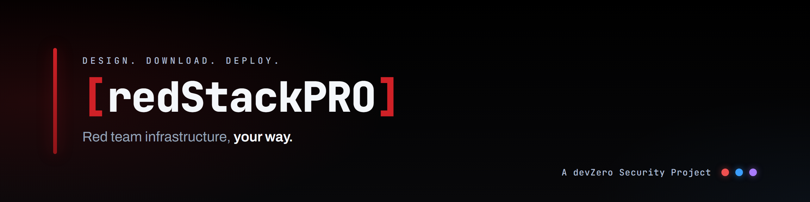
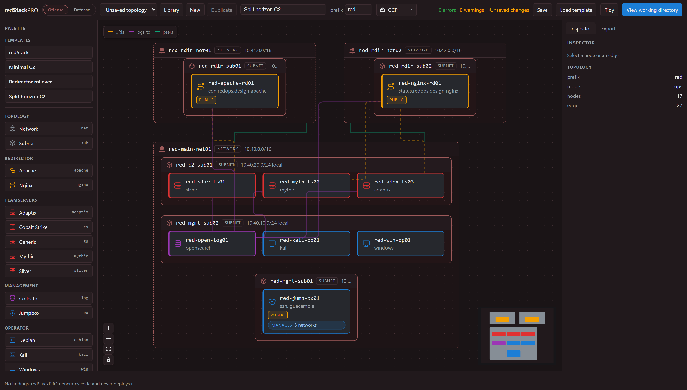
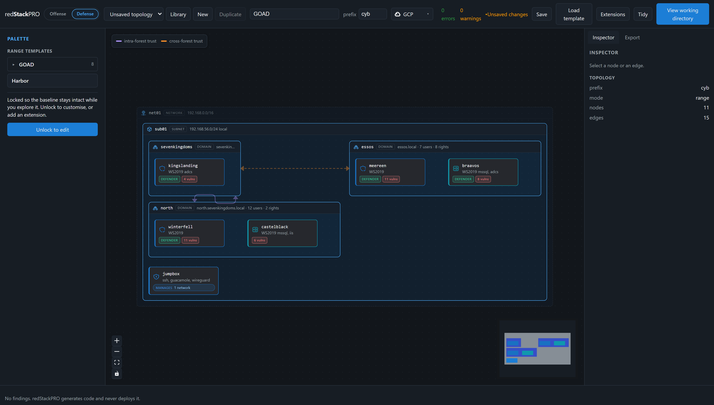

Red team infrastructure, composed on a canvas.
redStackPRO is a visual canvas for red team infrastructure and cyber ranges. Compose a topology, then export a complete, runnable working directory of Terraform and Ansible. You run it from your own machine. redStackPRO never holds your cloud credentials.
docker run -p 8000:8000 -v redstackpro-data:/data ghcr.io/devzero-security/redstackpro:0.9.0
Compose your topology on the canvas.
Offense and defense are the same tool, the same export, the same deploy. Draw the range yourself, or start from a shipped lab and edit it.


Attack, target, and telemetry on the same canvas.
Every node is colored by what it does, so a range reads at a glance. Each color means one thing, and it holds that meaning everywhere.
Attack infrastructure
Redirectors, request gating, and C2 blueprints for Mythic, Sliver, and Adaptix. Tested on GCP and AWS.
The target side
Active Directory ranges, ACLs, and vulnerabilities. GOAD and other labs compile through the same pipeline.
Telemetry and detection
Collectors and log pipelines on the offense or defense side, so an operation leaves evidence you can inspect.
Design, download, deploy.
The canvas is a composition layer. It generates the working directory and hands it to you. Nothing in that chain reaches your cloud on your behalf. It also has an API and a command line, so an agent can read the schema and drive the compose, validate, and compile steps.
Compose the topology
Draw the range on the canvas, or start from a shipped lab like GOAD and edit it as a baseline.
Compile the topology
One topology becomes Terraform for the cloud and Ansible for the hosts, with a briefing on what is planted where.
Run it yourself
Fill in your variables and run deploy.sh. Your credentials stay on your machine throughout. Every shipped lab has a written walkthrough in the wiki.
A range to validate TTPs and tooling before an operation. Built for rehearsing them, not teaching them from scratch.